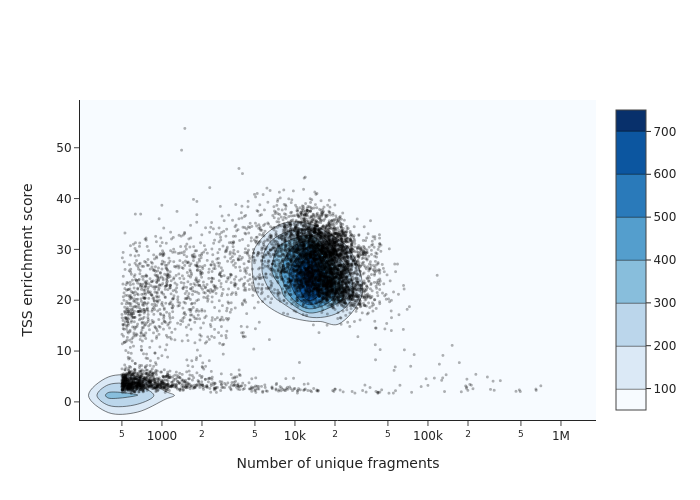
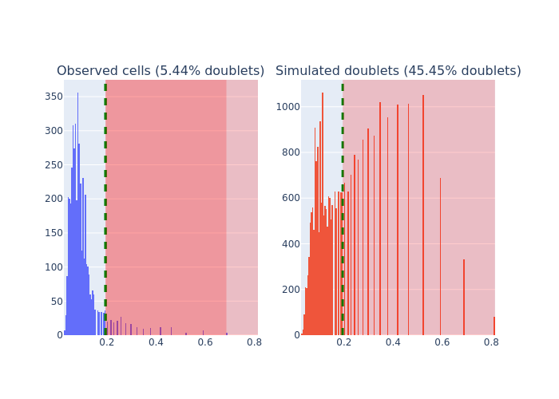
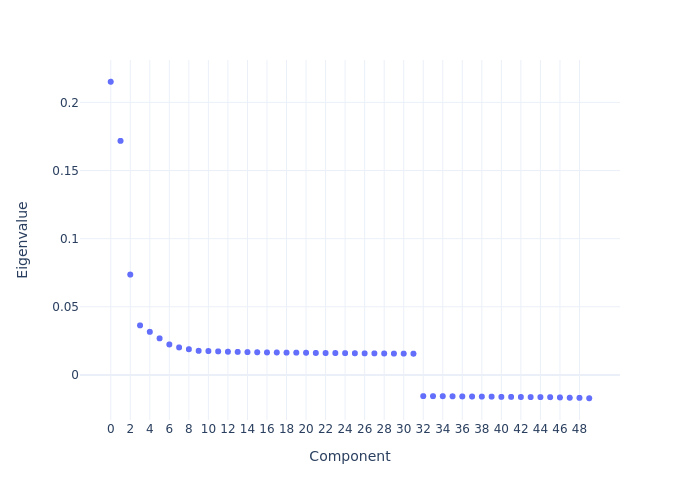
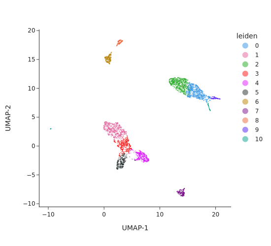
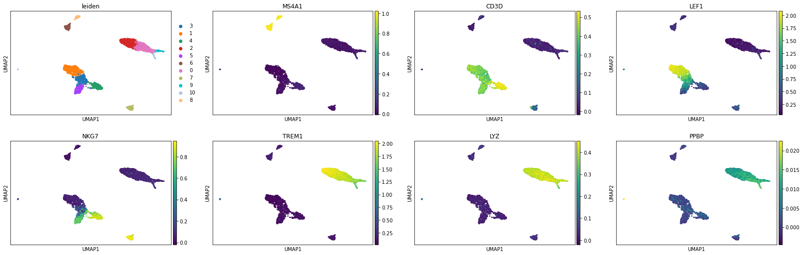
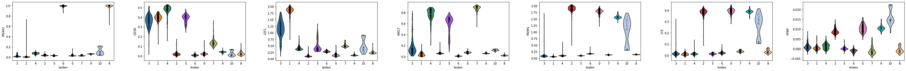

Standard pipeline: analyzing 5K PBMC dataset from 10X genomics
Introduction
In this tutorial we will analyze single-cell ATAC-seq data from Peripheral blood mononuclear cells (PBMCs).
Import library and environment setup
[1]:
import snapatac2 as snap
The fragment file can be download from 10X genomics website. We also need a gene annotation file which can be downloaded from Gencode.
[2]:
# Input files
fragment_file = "data/atac_pbmc_5k_nextgem_fragments.tsv.gz"
gene_annotation = "data/gencode.v39.basic.annotation.gff3.gz"
Preprocessing
We start off on data preprocessing by importing the fragment files and computing QC metric, which is achieved by calling the funciton import_data.
This function generates genome-wide TN5 insertion counts and stored the result in an anndata file (default to “data.h5ad”) (Click here to learn more about the anndata format). During this process, various quality controls, such as TSS enrichment, the number of unique fragments per cell, will also be computed and stored in the anndata.
[3]:
%%time
data = snap.pp.import_data(
fragment_file,
gene_annotation,
snap.genome.hg38,
file = "pbmc.h5ad",
sorted_by_barcode=False,
)
data
CPU times: user 6min 8s, sys: 9.09 s, total: 6min 17s
Wall time: 6min 13s
[3]:
AnnData object with n_obs x n_vars = 14227 x 0 backed at 'pbmc.h5ad'
obs: Cell, tsse, n_fragment, frac_dup, frac_mito
obsm: insertion
uns: reference_sequences
To identify usable/high-quality cells, we can plot TSS enrichment against number of unique fragments for each cell.
[4]:
snap.pl.tsse(data, show_cells=True, interactive=False)
[4]:

The cells on the upper right corresponds to valid/high-quality cells, while the cells on the lower left corresponds to low-quality cells or empty dropblets. According to this plot, we decided to choose minimum TSS enrichment of 10 and minimum number of fragments of 5000 to filter the cells.
[5]:
%%time
snap.pp.filter_cells(data, min_counts=5000, min_tsse=10, max_counts=50000)
data
CPU times: user 27.7 s, sys: 1.6 s, total: 29.3 s
Wall time: 28.9 s
[5]:
AnnData object with n_obs x n_vars = 4544 x 0 backed at 'pbmc.h5ad'
obs: Cell, tsse, n_fragment, frac_dup, frac_mito
obsm: insertion
uns: reference_sequences
We next create a cell by bin matrix containing insertion counts across genome-wide 500-bp bins.
[6]:
%%time
snap.pp.make_tile_matrix(data)
CPU times: user 2min 38s, sys: 4.34 s, total: 2min 43s
Wall time: 1min 8s
We next perform feature selection to remove bins with low variability. The result is stored in data.var["selected"] and will be automatically picked up by relavent functions such as snap.pp.scrublet and snap.tl.spectral.
The default feature selection algorithm selects variable features. You can pass filter list to the function such as blacklist or whitelist. For example, pp.select_features(data, blacklist="blacklist.bed").
[7]:
# Feature selection
snap.pp.select_features(data)
Doublet removal
Here we apply a customized scrublet algorithm to identify potential doublets. Calling snap.pp.scrublet will assign a doublet score to each cell. We can then use snap.pp.call_doublets to get the doublet score threshold to identify potential doublets. The result can be plotted by snap.pl.scrublet.
[8]:
%%time
snap.pp.scrublet(data)
Simulating doublets...
Spectral embedding ...
Calculating doublet scores...
CPU times: user 2min 14s, sys: 34.7 s, total: 2min 49s
Wall time: 1min 13s
[9]:
snap.pp.call_doublets(data)
snap.pl.scrublet(data, interactive=False)
[9]:

This line does the actual filtering.
[10]:
data.subset(data.obs["is_doublet"] == False)
data
[10]:
AnnData object with n_obs x n_vars = 4297 x 6176550 backed at 'pbmc.h5ad'
obs: Cell, tsse, n_fragment, frac_dup, frac_mito, doublet_score, is_doublet
var: Feature_ID, selected
obsm: insertion
uns: scrublet_sim_doublet_score, scrublet_threshold, reference_sequences
Dimenstion reduction
To compute the lower dimensional representation of single-cell chromatin profiles, we first compute the pairwise read-depth normalized jaccard similarity. We then use the spectral embedding to perform the dimension reduction. All these steps were packed into a single function snap.tl.spectral. The result is stored in data.obsm['X_spectral']. Note we also provide alternative similarity metric such as the cosine similarity. Full details about the algorithm we used in dimension reduction
can be found here.
[11]:
%%time
snap.tl.spectral(data)
/home/kaizhang/data/software/miniconda3/lib/python3.8/site-packages/snapatac2/tools/_spectral.py:17: RuntimeWarning:
divide by zero encountered in true_divide
Compute similarity matrix
Normalization
Perform decomposition
CPU times: user 32.4 s, sys: 29.2 s, total: 1min 1s
Wall time: 14.7 s
We then plot the top eigenvalues corresponding to the first n eigenvectors/components. Using the elbow method, we pick the first 15 components in subsequent analysis. Note that selecting approporiate number of components is critical for getting best clustering accuracy.
[12]:
snap.pl.spectral_eigenvalues(data, interactive=False)
[12]:

We then use UMAP to embed the cells to 2-dimension space for visualization purpose. This step will have to be run after snap.tl.spectral as it uses the lower dimesnional representation created by the spectral embedding.
[13]:
%%time
snap.tl.umap(data, use_dims=10)
/home/kaizhang/data/software/miniconda3/lib/python3.8/site-packages/umap/__init__.py:9: UserWarning:
Tensorflow not installed; ParametricUMAP will be unavailable
CPU times: user 36.9 s, sys: 9.98 s, total: 46.9 s
Wall time: 34.7 s
Clustering analysis
We next perform graph-based clustering to identify cell clusters. We first build a k-nearest neighbour graph using snap.pp.knn, and then use the Leiden community detection algorithm to identify densely-connected subgraphs/clusters in the graph. The graph-based clustering algorithm usually outperform other methods. Here we also run the k-means algorithm as a comparison.
[14]:
%%time
snap.pp.knn(data, use_dims=10)
snap.tl.leiden(data)
CPU times: user 2.46 s, sys: 80.4 ms, total: 2.54 s
Wall time: 718 ms
[15]:
snap.pl.umap(data, color="leiden", interactive=False)
/home/kaizhang/data/software/miniconda3/lib/python3.8/site-packages/polars/internals/frame.py:1675: UserWarning:
setting a DataFrame by indexing is deprecated; Consider using DataFrame.with_column
[15]:

Cell cluster annotation
Create the cell by gene activity matrix
Now that we have the cell clusters, we will try to annotate the clusters and assign them to known cell types. To do this, we will need to compute the gene activities first for each cell, and store the result in a cell by gene activity matrix. These steps can be done by calling the snap.pp.make_gene_matrix function, providing a appropriate gene annotation file.
[16]:
%%time
gene_matrix = snap.pp.make_gene_matrix(data, gene_annotation, file = "gene_matrix.h5ad")
gene_matrix
CPU times: user 15min 58s, sys: 10.9 s, total: 16min 9s
Wall time: 1min 33s
[16]:
AnnData object with n_obs x n_vars = 4297 x 60286 backed at 'gene_matrix.h5ad'
obs: Cell, tsse, n_fragment, frac_dup, frac_mito, doublet_score, is_doublet, leiden
var: Feature_ID
Imputation
The cell by gene activity matrix is usually very sparse. To ease the visulization and marker gene identification, we use the MAGIC algorithm to perform imputation and data smoothing.
The subsequent steps are similar to those in single-cell RNA-seq analysis, we therefore leverage the scanpy package to do this.
Let’s close the files opened by snapatac2 and then open it in scanpy to continue our analysis.
[17]:
import scanpy as sc
gene_matrix.close()
gene_matrix = sc.read("gene_matrix.h5ad")
We first perform gene filtering, data normalization, data transformation, and then call the sc.external.pp.magic function to complete the imputation.
[18]:
sc.pp.filter_genes(gene_matrix, min_cells= 5)
sc.pp.normalize_total(gene_matrix)
sc.pp.log1p(gene_matrix)
[20]:
%%time
sc.external.pp.magic(gene_matrix, solver="approximate")
/home/kaizhang/.local/lib/python3.8/site-packages/magic/utils.py:145: FutureWarning:
X.dtype being converted to np.float32 from float64. In the next version of anndata (0.9) conversion will not be automatic. Pass dtype explicitly to avoid this warning. Pass `AnnData(X, dtype=X.dtype, ...)` to get the future behavour.
CPU times: user 1min 5s, sys: 36.5 s, total: 1min 41s
Wall time: 47.5 s
[19]:
# Copy umap embedding
gene_matrix.obsm["X_umap"] = data.obsm["X_umap"]
We can then visualize the gene activity of a few marker genes.
[21]:
marker_genes = ['MS4A1', 'CD3D', 'LEF1', 'NKG7', 'TREM1', 'LYZ', 'PPBP']
sc.pl.umap(gene_matrix, use_raw=False, color=["leiden"] + marker_genes)
sc.pl.violin(gene_matrix, marker_genes, use_raw=False, groupby='leiden')


Peak calling at the cluster-level
An important goal of single-cell ATAC-seq analysis is to identify genomic regions that are enriched with TN5 insertions, or “open chromatin” regions. Using snap.tl.call_peaks, we can easily identify open chromatin regions in different cell populations stratified by provided group information.
[22]:
%%time
snap.tl.call_peaks(data, group_by = "leiden")
/home/kaizhang/data/software/miniconda3/lib/python3.8/site-packages/polars/internals/frame.py:1675: UserWarning:
setting a DataFrame by indexing is deprecated; Consider using DataFrame.with_column
CPU times: user 1min 5s, sys: 12.5 s, total: 1min 17s
Wall time: 3min 22s
preparing input...
calling peaks for 11 groups...
group 8: done!
group 9: done!
group 6: done!
group 7: done!
group 5: done!
group 10: done!
group 3: done!
group 4: done!
group 1: done!
group 2: done!
group 0: done!
snap.tl.call_peaks first calls peaks for individual groups and then merges overlapping peaks to create a list of fix-width non-overlapping peaks. The intermediate results are discarded by default but can be saved using the out_dir parameter.
Results of peak calling are stored in data.uns['peaks'] as a dataframe. Rows are merged peaks, and columns are cell clusters. Boolean values in the dataframe indicate whether a peak is present in a given cell cluster.
[23]:
data.uns['peaks']
[23]:
| Peaks | 10 | 6 | 3 | 7 | 4 | 2 | 0 | 5 | 8 | 1 | 9 |
|---|---|---|---|---|---|---|---|---|---|---|---|
| str | bool | bool | bool | bool | bool | bool | bool | bool | bool | bool | bool |
| "chr1:180641-181142" | false | false | true | true | true | true | false | false | false | false | false |
| "chr1:181213-181714" | false | false | false | false | false | false | false | false | false | true | false |
| "chr1:191594-192095" | false | false | false | true | true | true | false | true | false | false | false |
| "chr1:267750-268251" | true | false | true | false | true | true | true | false | false | false | false |
| "chr1:585944-586445" | false | false | false | false | false | false | false | false | true | false | false |
| "chr1:629690-630191" | false | true | false | false | false | false | false | false | true | true | false |
| "chr1:633773-634274" | false | true | true | true | true | true | true | true | true | true | false |
| "chr1:634467-634968" | false | false | false | false | false | false | false | false | true | false | false |
| "chr1:778451-778952" | true | true | true | true | true | true | true | true | true | true | true |
| "chr1:779490-779991" | false | false | false | false | false | true | true | false | false | false | false |
| "chr1:816100-816601" | true | false | false | false | false | false | false | false | false | false | false |
| "chr1:817100-817601" | true | false | false | false | false | true | true | true | true | false | true |
| ... | ... | ... | ... | ... | ... | ... | ... | ... | ... | ... | ... |
| "chrY:21288204-21288705" | false | false | false | false | false | false | true | false | true | false | false |
| "chrY:21295111-21295612" | true | false | false | false | false | false | false | false | false | false | false |
| "chrY:21302550-21303051" | true | false | false | false | false | false | false | false | true | false | false |
| "chrY:21315761-21316262" | false | false | false | false | false | false | true | false | false | false | false |
| "chrY:21394073-21394574" | true | false | false | false | false | false | false | false | false | false | false |
| "chrY:21422135-21422636" | true | true | false | false | false | true | true | false | true | false | false |
| "chrY:21440468-21440969" | true | true | false | false | false | true | true | false | true | false | false |
| "chrY:21481499-21482000" | true | false | false | false | false | false | false | false | false | false | false |
| "chrY:21650454-21650955" | false | false | false | false | false | false | true | false | false | false | false |
| "chrY:21679505-21680006" | false | false | false | false | false | false | false | false | true | false | false |
| "chrY:26315018-26315519" | false | true | false | false | false | false | false | false | false | false | false |
| "chrY:56849377-56849878" | true | false | false | false | false | false | false | false | false | false | false |
Now, with the peak list, we can create a cell by peak matrix by snap.pp.make_peak_matrix.
[24]:
%%time
peak_mat = snap.pp.make_peak_matrix(data, file = "peak_matrix.h5ad")
peak_mat
CPU times: user 11min 24s, sys: 10.9 s, total: 11min 35s
Wall time: 1min 7s
[24]:
AnnData object with n_obs x n_vars = 4297 x 246212 backed at 'peak_matrix.h5ad'
obs: Cell, tsse, n_fragment, frac_dup, frac_mito, doublet_score, is_doublet, leiden
var: Feature_ID
Close AnnData objects
The AnnData objects in SnapATAC are always opened in backed mode and synchronized with the HDF5 files. By doing so, we use significantly less memory and much faster startup time. And you don’t need to save your results during the analysis as the file is always up to date. As a result, it is important to close all AnnData objects before shutdown the Python process to avoid HDF5 file corruptions, using the command below:
[25]:
data.close()
data
[25]:
Closed AnnData object
Now it is safe to close and shutdown the notebook! Next time you can load the results using data = snap.read("pbmc.h5ad").